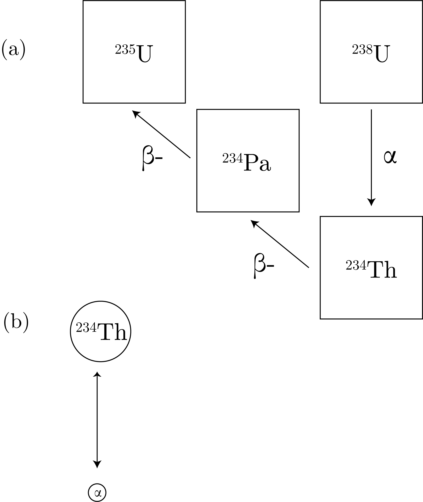

We remember the iso / geochron methodology in Fig. 1.
Fig. 1: A cartoon of the iso / geochron method for Pb.
To determine the error statistics, we note the natural abundances of the and see that $^{204}$Pb has the lowest ($\sim 1.4 \%$).
We plot this error for the Clair Patterson paper in Fig. 2.
Fig. 2: A cartoon of the isochron in Pb including errors as used in the Patterson (1956) paper.
$^{238}$U Decay Chain
We can think of the decay as in Fig. 3.

Fig. 3: (a) The top terms of radioactive decay of the $^{238}$U decay chain. (b) The mass conservation of the initial decay in the chain.
We define the activity as:
\begin{equation}
A = \lambda N,
\end{equation}
for $N$ the number of atoms.
We define secular equilibrium as, for $A_i$ the activities in a decay chain after some parent:
\begin{equation}
A_1 = A_2 = A_3 = \ldots
\end{equation}
which then means that:
\begin{equation}
\lambda N_1 = \lambda N_2 = \lambda N_3 = \ldots
\end{equation}
Therefore, we can update our decay equation to give:
\begin{equation}
-\frac{\textrm{d}N_1}{\textrm{d}t} = \lambda_1 N_1,
\end{equation}
for the first, then:
\begin{equation}
\frac{\textrm{d}N_2}{\textrm{d}t} = \lambda_1 N_1 - \lambda N_2 = \lambda_1N_1(t_0)\exp\left[-\lambda_1 t\right] - \lambda_2 N_2,
\end{equation}
which we can solve, which we call the Bateman Equations, for coupled exponentials.
A fun idea: set up these equation solutions for all of the 238 decay chain, so that we can turn cool knobs.